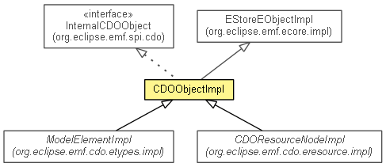

org.eclipse.emf.internal.cdo
Class CDOObjectImpl
java.lang.Object
 org.eclipse.emf.common.notify.impl.BasicNotifierImpl
org.eclipse.emf.ecore.impl.BasicEObjectImpl
org.eclipse.emf.ecore.impl.MinimalEObjectImpl
org.eclipse.emf.ecore.impl.MinimalEStoreEObjectImpl
org.eclipse.emf.internal.cdo.CDOObjectImpl
org.eclipse.emf.common.notify.impl.BasicNotifierImpl
org.eclipse.emf.ecore.impl.BasicEObjectImpl
org.eclipse.emf.ecore.impl.MinimalEObjectImpl
org.eclipse.emf.ecore.impl.MinimalEStoreEObjectImpl
org.eclipse.emf.internal.cdo.CDOObjectImpl
- All Implemented Interfaces:
- CDOObject, CDOWithID, CDOPackageTypeRegistry.CDOObjectMarker, Notifier, EObject, EStructuralFeature.Internal.DynamicValueHolder, InternalEObject, InternalCDOLoadable, InternalCDOObject
- Direct Known Subclasses:
- CDOResourceNodeImpl, ModelElementImpl, PermissionImpl, UserPasswordImpl
- public class CDOObjectImpl
- extends MinimalEStoreEObjectImpl
- implements InternalCDOObject

The base class of all native objects.
|
Method Summary |
InternalCDOClassInfo |
cdoClassInfo()
|
boolean |
cdoConflict()
Returns true if this object contains local changes that are conflicting with recognized remote
changes, false otherwise. |
CDOResource |
cdoDirectResource()
Returns the directly containing resource of this object, or null if this object is
not an element of the contents list of any CDO resource. |
CDOObjectHistory |
cdoHistory()
|
CDOID |
cdoID()
Returns the technical object identifier of this object, or null if the state of this object is TRANSIENT or INVALID. |
EStructuralFeature |
cdoInternalDynamicFeature(int dynamicFeatureID)
Deprecated. |
InternalEObject |
cdoInternalInstance()
|
void |
cdoInternalPostAttach()
|
void |
cdoInternalPostDetach(boolean remote)
It is really important for accessing the data to go through cdoStore(). |
void |
cdoInternalPostInvalidate()
|
void |
cdoInternalPostLoad()
|
void |
cdoInternalPostRollback()
|
void |
cdoInternalPreCommit()
|
void |
cdoInternalPreLoad()
|
void |
cdoInternalSetID(CDOID id)
|
void |
cdoInternalSetResource(CDOResource resource)
|
void |
cdoInternalSetRevision(CDORevision revision)
|
CDOState |
cdoInternalSetState(CDOState state)
|
void |
cdoInternalSetView(CDOView view)
|
boolean |
cdoInvalid()
Returns true if this object is considered as locally invalid (TODO Simon: please briefly explain what
this state means) , false otherwise. |
CDOLockState |
cdoLockState()
Returns the CDOLockState of this object. |
void |
cdoPrefetch(int depth)
Ensures that the revisions of the contained objects up to the given depth are in the local
revision cache. |
CDOLock |
cdoReadLock()
Returns the read lock associated with this object. |
void |
cdoReload()
TODO: JavaDoc |
CDOResource |
cdoResource()
Returns the resource of this object, no matter where this object is located in the containment
tree of that resource, or null if this object is not contained in a CDO resource. |
InternalCDORevision |
cdoRevision()
Returns the revision of this object, or null if this object does currently not
have a revision. |
CDOState |
cdoState()
Returns the local state of this object. |
InternalCDOView |
cdoView()
Returns the view this object is associated with, or null if this object is not
associated with a view. |
CDOLock |
cdoWriteLock()
Returns the write lock associated with this object. |
CDOLock |
cdoWriteOption()
Returns the write option associated with this object. |
protected FeatureMap |
createFeatureMap(EStructuralFeature eStructuralFeature)
|
protected EList<?> |
createList(EStructuralFeature eStructuralFeature)
|
static CDOLock |
createLock(InternalCDOObject object,
IRWLockManager.LockType type)
|
protected org.eclipse.emf.internal.cdo.CDOObjectImpl.CDOStoreEcoreEMap |
createMap(EStructuralFeature eStructuralFeature)
|
protected org.eclipse.emf.internal.cdo.CDOObjectImpl.CDOStoreUnorderedEList<Object> |
createUnorderedList(EStructuralFeature eStructuralFeature)
|
Object |
dynamicGet(int dynamicFeatureID)
|
void |
dynamicSet(int dynamicFeatureID,
Object value)
|
void |
dynamicUnset(int dynamicFeatureID)
|
protected void |
eAdapterAdded(Adapter adapter)
This method must not be private because the MinimalEStoreEObjectImpl in CDO's ecore.minimal (retrofitting) fragment
introduces it as a protected method and calls it. |
protected void |
eAdapterRemoved(Adapter adapter)
This method must not be private because the MinimalEStoreEObjectImpl in CDO's ecore.minimal (retrofitting) fragment
introduces it as a protected method and calls it. |
protected BasicNotifierImpl.EObservableAdapterList.Listener[] |
eBasicAdapterListeners()
This method is not called by the MinimalEStoreEObjectImpl in CDO's ecore.minimal (retrofitting) fragment
but it is called by the normal MinimalEObjectImpl as of EMF 2.9. |
protected void |
eBasicSetAdapterListeners(BasicNotifierImpl.EObservableAdapterList.Listener[] eAdapterListeners)
This method is not called by the MinimalEStoreEObjectImpl in CDO's ecore.minimal (retrofitting) fragment
but it is called by the normal MinimalEObjectImpl as of EMF 2.9. |
protected void |
eBasicSetContainer(InternalEObject newEContainer,
int newContainerFeatureID)
|
NotificationChain |
eBasicSetContainer(InternalEObject newContainer,
int newContainerFeatureID,
NotificationChain msgs)
Code taken from BasicEObjectImpl.eBasicSetContainer(org.eclipse.emf.ecore.InternalEObject, int) and modified to detect whether the object is moved in the
same context. |
protected void |
eBasicSetSettings(Object[] settings)
|
protected Object[] |
eBasicSettings()
|
EClass |
eClass()
|
protected Adapter[] |
eContainerAdapterArray()
|
int |
eContainerFeatureID()
|
Resource.Internal |
eDirectResource()
|
protected EClass |
eDynamicClass()
|
protected EStructuralFeature |
eDynamicFeature(int dynamicFeatureID)
|
protected int |
eDynamicFeatureID(EStructuralFeature eStructuralFeature)
|
protected boolean |
eDynamicIsSet(int dynamicFeatureID,
EStructuralFeature eFeature)
|
protected boolean |
eHasSettings()
|
InternalEObject |
eInternalContainer()
|
Resource.Internal |
eInternalResource()
|
protected boolean |
eIsCaching()
Don't cache non-transient features in this CDOObject's eSettings(). |
boolean |
equals(Object obj)
Specializing the behaviour of equals(Object) is not permitted as per EObject specification. |
void |
eSetClass(EClass eClass)
|
protected void |
eSetDirectResource(Resource.Internal resource)
|
NotificationChain |
eSetResource(Resource.Internal resource,
NotificationChain notifications)
Code took from BasicEObjectImpl.eSetResource(org.eclipse.emf.ecore.resource.Resource.Internal, org.eclipse.emf.common.notify.NotificationChain) and modify it to detect when object are moved in the same
context. |
protected EStructuralFeature.Internal.DynamicValueHolder |
eSettings()
|
InternalEObject.EStore |
eStore()
|
static CDOLockState |
getLockState(InternalCDOObject object)
|
int |
hashCode()
Specializing the behaviour of hashCode() is not permitted as per EObject specification. |
static void |
instanceToRevisionFeature(InternalCDOView view,
InternalCDOObject object,
EStructuralFeature feature,
Object setting)
|
static void |
revisionToInstanceFeature(InternalCDOObject instance,
InternalCDORevision revision,
EStructuralFeature eFeature)
|
String |
toString()
|
| Methods inherited from class org.eclipse.emf.ecore.impl.MinimalEObjectImpl |
eAdapters, eBasicAdapterArray, eBasicAdapters, eBasicHasAdapters, eBasicProperties, eBasicSetContainer, eBasicSetContainerFeatureID, eContents, eCrossReferences, eDeliver, eIsProxy, eProperties, eProxyURI, eSetDeliver, eSetProxyURI |
| Methods inherited from class org.eclipse.emf.ecore.impl.BasicEObjectImpl |
eAddVirtualValue, eAllContents, eBaseStructuralFeatureID, eBasicRemoveFromContainer, eBasicRemoveFromContainerFeature, eComputeVirtualValuesCapacity, eContainer, eContainingFeature, eContainmentFeature, eContainmentFeature, eContains, eDerivedOperationID, eDerivedOperationID, eDerivedStructuralFeatureID, eDynamicBasicRemoveFromContainer, eDynamicGet, eDynamicGet, eDynamicGet, eDynamicInverseAdd, eDynamicInverseAdd, eDynamicInverseRemove, eDynamicInverseRemove, eDynamicInvoke, eDynamicInvoke, eDynamicIsSet, eDynamicIsSet, eDynamicSet, eDynamicSet, eDynamicSet, eDynamicUnset, eDynamicUnset, eDynamicUnset, eGet, eGet, eGet, eGet, eInverseAdd, eInverseAdd, eInverseRemove, eInverseRemove, eInvocationDelegate, eInvoke, eInvoke, eIsSet, eIsSet, eObjectForURIFragmentSegment, eOpenGet, eOpenIsSet, eOpenSet, eOpenUnset, eRemoveVirtualValue, eResolveProxy, eResource, eSet, eSet, eSetStore, eSetting, eSettingDelegate, eSetVirtualIndexBits, eSetVirtualValue, eSetVirtualValues, eStaticClass, eStaticOperationCount, eUnset, eUnset, eURIFragmentSegment, eVirtualBitCount, eVirtualGet, eVirtualGet, eVirtualIndex, eVirtualIndexBits, eVirtualIsSet, eVirtualSet, eVirtualUnset, eVirtualValue, eVirtualValues |
| Methods inherited from interface org.eclipse.emf.ecore.InternalEObject |
eBaseStructuralFeatureID, eBasicRemoveFromContainer, eDerivedOperationID, eDerivedStructuralFeatureID, eGet, eGet, eInverseAdd, eInverseRemove, eInvoke, eIsSet, eNotificationRequired, eObjectForURIFragmentSegment, eProxyURI, eResolveProxy, eSet, eSetProxyURI, eSetStore, eSetting, eUnset, eURIFragmentSegment |
| Methods inherited from interface org.eclipse.emf.ecore.EObject |
eAllContents, eContainer, eContainingFeature, eContainmentFeature, eContents, eCrossReferences, eGet, eGet, eInvoke, eIsProxy, eIsSet, eResource, eSet, eUnset |
CDOObjectImpl
public CDOObjectImpl()
cdoClassInfo
public final InternalCDOClassInfo cdoClassInfo()
- Specified by:
cdoClassInfo in interface InternalCDOObject
- Since:
- 4.2
cdoState
public final CDOState cdoState()
- Description copied from interface:
CDOObject
- Returns the local
state of this object.
- Specified by:
cdoState in interface CDOObject
cdoView
public final InternalCDOView cdoView()
- Description copied from interface:
CDOObject
- Returns the
view this object is associated with, or null if this object is not
associated with a view. This view manages all aspects of this object and cahces it as long as required.
- Specified by:
cdoView in interface CDOObject- Specified by:
cdoView in interface InternalCDOObject
- Since:
- 2.0
cdoID
public final CDOID cdoID()
- Description copied from interface:
CDOObject
- Returns the technical object identifier of this object, or
null if the state of this object is TRANSIENT or INVALID.
If the state of this object is NEW the returned CDOID instance can be cast to
CDOIDTemp and is unique in the scope of the associated transaction. In all other states
a non-null return value uniquely identifies a persistent object in the scope of the whole repository.
- Specified by:
cdoID in interface CDOObject- Specified by:
cdoID in interface CDOWithID
- See Also:
CDOObject.cdoState()
cdoRevision
public final InternalCDORevision cdoRevision()
- Description copied from interface:
CDOObject
- Returns the
revision of this object, or null if this object does currently not
have a revision. The revision is used to store all modeled data of this object, together with some technical data
required by the framework.
- Specified by:
cdoRevision in interface CDOObject- Specified by:
cdoRevision in interface InternalCDOObject
- Since:
- 2.0
cdoResource
public final CDOResource cdoResource()
- Description copied from interface:
CDOObject
- Returns the
resource of this object, no matter where this object is located in the containment
tree of that resource, or null if this object is not contained in a CDO resource.
This method may not return null return for objects that have no direct
resource. Please note that, depending on the containment depth of this object, the evaluation of the resource can
be a costly operation.
- Specified by:
cdoResource in interface CDOObject
- See Also:
CDOObject.cdoDirectResource()
cdoDirectResource
public final CDOResource cdoDirectResource()
- Description copied from interface:
CDOObject
- Returns the directly containing
resource of this object, or null if this object is
not an element of the contents list of any CDO resource.
Please note that, independend of the containment depth of this object, the evaluation of the direct resource is an
operation with a constant cost.
- Specified by:
cdoDirectResource in interface CDOObject
- Since:
- 2.0
cdoPrefetch
public final void cdoPrefetch(int depth)
- Description copied from interface:
CDOObject
- Ensures that the revisions of the contained objects up to the given depth are in the local
revision cache. Subsequent access to the respective contained objects will not lead to
server round-trips after calling this method.
- Specified by:
cdoPrefetch in interface CDOObject
- Parameters:
depth - CDORevision.DEPTH_NONE, CDORevision.DEPTH_INFINITE or any other positive integer number.- Since:
- 3.0
cdoReload
public final void cdoReload()
- Description copied from interface:
CDOObject
- TODO: JavaDoc
- Specified by:
cdoReload in interface CDOObject
cdoHistory
public final CDOObjectHistory cdoHistory()
- Specified by:
cdoHistory in interface CDOObject
- Since:
- 4.2
cdoConflict
public final boolean cdoConflict()
- Description copied from interface:
CDOObject
- Returns
true if this object contains local changes that are conflicting with recognized remote
changes, false otherwise.
This method is a convenience method to determine whether the state of this object is either
CONFLICT or INVALID_CONFLICT.
- Specified by:
cdoConflict in interface CDOObject
- Since:
- 2.0
cdoInvalid
public final boolean cdoInvalid()
- Description copied from interface:
CDOObject
- Returns
true if this object is considered as locally invalid (TODO Simon: please briefly explain what
this state means) , false otherwise.
This method is a convenience method to determine whether the state of this object is either
INVALID or INVALID_CONFLICT.
- Specified by:
cdoInvalid in interface CDOObject
- Since:
- 2.0
cdoReadLock
public final CDOLock cdoReadLock()
- Description copied from interface:
CDOObject
- Returns the read lock associated with this object.
- Specified by:
cdoReadLock in interface CDOObject
- Returns:
- Never
null. - Since:
- 2.0
cdoWriteLock
public final CDOLock cdoWriteLock()
- Description copied from interface:
CDOObject
- Returns the write lock associated with this object.
- Specified by:
cdoWriteLock in interface CDOObject
- Returns:
- Never
null. - Since:
- 2.0
cdoWriteOption
public final CDOLock cdoWriteOption()
- Description copied from interface:
CDOObject
- Returns the write option associated with this object.
A write option is a lock that
- is exclusive; i.e. can only be held by one view
- prevents other views from obtaining a write lock on the same object
- does not prevent other views from obtaining a read lock on the same object
It thus allows a view to ensure that it is the only that who will be able to obtain a write lock in the future,
without preventing read locks to be obtained by others at this moment.
- Specified by:
cdoWriteOption in interface CDOObject
- Since:
- 4.1
cdoLockState
public final CDOLockState cdoLockState()
- Description copied from interface:
CDOObject
- Returns the
CDOLockState of this object.
- Specified by:
cdoLockState in interface CDOObject
- Since:
- 4.1
cdoInternalSetState
public final CDOState cdoInternalSetState(CDOState state)
- Specified by:
cdoInternalSetState in interface InternalCDOObject
cdoInternalSetView
public final void cdoInternalSetView(CDOView view)
- Specified by:
cdoInternalSetView in interface InternalCDOObject
- Since:
- 2.0
cdoInternalSetID
public final void cdoInternalSetID(CDOID id)
- Specified by:
cdoInternalSetID in interface InternalCDOObject
cdoInternalSetRevision
public final void cdoInternalSetRevision(CDORevision revision)
- Specified by:
cdoInternalSetRevision in interface InternalCDOObject
- Since:
- 2.0
cdoInternalSetResource
public final void cdoInternalSetResource(CDOResource resource)
cdoInternalPreLoad
public void cdoInternalPreLoad()
- Specified by:
cdoInternalPreLoad in interface InternalCDOLoadable
- Since:
- 2.0
cdoInternalPostLoad
public final void cdoInternalPostLoad()
- Specified by:
cdoInternalPostLoad in interface InternalCDOLoadable
cdoInternalPostInvalidate
public final void cdoInternalPostInvalidate()
- Specified by:
cdoInternalPostInvalidate in interface InternalCDOObject
- Since:
- 2.0
cdoInternalPostAttach
public final void cdoInternalPostAttach()
- Specified by:
cdoInternalPostAttach in interface InternalCDOObject
cdoInternalPostDetach
public void cdoInternalPostDetach(boolean remote)
- It is really important for accessing the data to go through
cdoStore(). eStore() will redirect
you to the transient data.
- Specified by:
cdoInternalPostDetach in interface InternalCDOObject
- Since:
- 2.0
cdoInternalPostRollback
public final void cdoInternalPostRollback()
- Specified by:
cdoInternalPostRollback in interface InternalCDOObject
- Since:
- 3.0
cdoInternalPreCommit
public final void cdoInternalPreCommit()
- Specified by:
cdoInternalPreCommit in interface InternalCDOObject
cdoInternalInstance
public final InternalEObject cdoInternalInstance()
- Specified by:
cdoInternalInstance in interface InternalCDOObject
cdoInternalDynamicFeature
@Deprecated
public final EStructuralFeature cdoInternalDynamicFeature(int dynamicFeatureID)
- Deprecated.
- Specified by:
cdoInternalDynamicFeature in interface InternalCDOObject
eStore
public final InternalEObject.EStore eStore()
- Specified by:
eStore in interface InternalEObject- Specified by:
eStore in class MinimalEStoreEObjectImpl
- Since:
- 2.0
eDynamicClass
protected final EClass eDynamicClass()
- Overrides:
eDynamicClass in class MinimalEObjectImpl
eClass
public final EClass eClass()
- Specified by:
eClass in interface EObject- Overrides:
eClass in class MinimalEObjectImpl
eSetClass
public void eSetClass(EClass eClass)
- Specified by:
eSetClass in interface InternalEObject- Overrides:
eSetClass in class MinimalEObjectImpl
eDirectResource
public Resource.Internal eDirectResource()
- Specified by:
eDirectResource in interface InternalEObject- Overrides:
eDirectResource in class MinimalEObjectImpl
- Since:
- 2.0
eInternalResource
public final Resource.Internal eInternalResource()
- Specified by:
eInternalResource in interface InternalEObject- Overrides:
eInternalResource in class BasicEObjectImpl
dynamicGet
public final Object dynamicGet(int dynamicFeatureID)
- Specified by:
dynamicGet in interface EStructuralFeature.Internal.DynamicValueHolder- Overrides:
dynamicGet in class MinimalEStoreEObjectImpl
dynamicSet
public final void dynamicSet(int dynamicFeatureID,
Object value)
- Specified by:
dynamicSet in interface EStructuralFeature.Internal.DynamicValueHolder- Overrides:
dynamicSet in class MinimalEStoreEObjectImpl
dynamicUnset
public final void dynamicUnset(int dynamicFeatureID)
- Specified by:
dynamicUnset in interface EStructuralFeature.Internal.DynamicValueHolder- Overrides:
dynamicUnset in class MinimalEStoreEObjectImpl
eDynamicIsSet
protected final boolean eDynamicIsSet(int dynamicFeatureID,
EStructuralFeature eFeature)
- Overrides:
eDynamicIsSet in class MinimalEStoreEObjectImpl
- Since:
- 2.0
eInternalContainer
public final InternalEObject eInternalContainer()
- Specified by:
eInternalContainer in interface InternalEObject- Overrides:
eInternalContainer in class MinimalEStoreEObjectImpl
eContainerFeatureID
public final int eContainerFeatureID()
- Specified by:
eContainerFeatureID in interface InternalEObject- Overrides:
eContainerFeatureID in class MinimalEStoreEObjectImpl
eBasicSetContainer
public final NotificationChain eBasicSetContainer(InternalEObject newContainer,
int newContainerFeatureID,
NotificationChain msgs)
- Code taken from
BasicEObjectImpl.eBasicSetContainer(org.eclipse.emf.ecore.InternalEObject, int) and modified to detect whether the object is moved in the
same context. (E.g.: An object is moved from resA to resB. resA and resB belongs to the same CDORepositoryInfo.
Without this special handling, a detach and newObject will be generated for the object moved)
- Specified by:
eBasicSetContainer in interface InternalEObject- Overrides:
eBasicSetContainer in class BasicEObjectImpl
- Since:
- 2.0
eSetResource
public final NotificationChain eSetResource(Resource.Internal resource,
NotificationChain notifications)
- Code took from
BasicEObjectImpl.eSetResource(org.eclipse.emf.ecore.resource.Resource.Internal, org.eclipse.emf.common.notify.NotificationChain) and modify it to detect when object are moved in the same
context.
- Specified by:
eSetResource in interface InternalEObject- Overrides:
eSetResource in class BasicEObjectImpl
- Since:
- 2.0
eSetDirectResource
protected final void eSetDirectResource(Resource.Internal resource)
- Overrides:
eSetDirectResource in class MinimalEObjectImpl
eBasicSetContainer
protected final void eBasicSetContainer(InternalEObject newEContainer,
int newContainerFeatureID)
- Overrides:
eBasicSetContainer in class MinimalEObjectImpl
eDynamicFeatureID
protected final int eDynamicFeatureID(EStructuralFeature eStructuralFeature)
- Overrides:
eDynamicFeatureID in class BasicEObjectImpl
eDynamicFeature
protected final EStructuralFeature eDynamicFeature(int dynamicFeatureID)
- Overrides:
eDynamicFeature in class BasicEObjectImpl
eSettings
protected final EStructuralFeature.Internal.DynamicValueHolder eSettings()
- Overrides:
eSettings in class MinimalEObjectImpl
eHasSettings
protected final boolean eHasSettings()
- Overrides:
eHasSettings in class MinimalEObjectImpl
eBasicSettings
protected final Object[] eBasicSettings()
- Overrides:
eBasicSettings in class MinimalEObjectImpl
eBasicSetSettings
protected final void eBasicSetSettings(Object[] settings)
- Overrides:
eBasicSetSettings in class MinimalEObjectImpl
eIsCaching
protected final boolean eIsCaching()
- Don't cache non-transient features in this CDOObject's
eSettings().
- Overrides:
eIsCaching in class MinimalEStoreEObjectImpl
eContainerAdapterArray
protected final Adapter[] eContainerAdapterArray()
- Overrides:
eContainerAdapterArray in class BasicEObjectImpl
eBasicAdapterListeners
protected final BasicNotifierImpl.EObservableAdapterList.Listener[] eBasicAdapterListeners()
- This method is not called by the MinimalEStoreEObjectImpl in CDO's ecore.minimal (retrofitting) fragment
but it is called by the normal MinimalEObjectImpl as of EMF 2.9.
- Overrides:
eBasicAdapterListeners in class MinimalEStoreEObjectImpl
- Since:
- 4.2
eBasicSetAdapterListeners
protected final void eBasicSetAdapterListeners(BasicNotifierImpl.EObservableAdapterList.Listener[] eAdapterListeners)
- This method is not called by the MinimalEStoreEObjectImpl in CDO's ecore.minimal (retrofitting) fragment
but it is called by the normal MinimalEObjectImpl as of EMF 2.9.
- Overrides:
eBasicSetAdapterListeners in class MinimalEStoreEObjectImpl
- Since:
- 4.2
eAdapterAdded
protected final void eAdapterAdded(Adapter adapter)
- This method must not be private because the MinimalEStoreEObjectImpl in CDO's ecore.minimal (retrofitting) fragment
introduces it as a protected method and calls it.
- Overrides:
eAdapterAdded in class MinimalEStoreEObjectImpl
- Since:
- 4.2
eAdapterRemoved
protected final void eAdapterRemoved(Adapter adapter)
- This method must not be private because the MinimalEStoreEObjectImpl in CDO's ecore.minimal (retrofitting) fragment
introduces it as a protected method and calls it.
- Overrides:
eAdapterRemoved in class MinimalEStoreEObjectImpl
- Since:
- 4.2
hashCode
public final int hashCode()
- Specializing the behaviour of
hashCode() is not permitted as per EObject specification.
- Overrides:
hashCode in class Object
equals
public final boolean equals(Object obj)
- Specializing the behaviour of
equals(Object) is not permitted as per EObject specification.
- Overrides:
equals in class Object
toString
public String toString()
- Overrides:
toString in class BasicEObjectImpl
createFeatureMap
protected final FeatureMap createFeatureMap(EStructuralFeature eStructuralFeature)
- Overrides:
createFeatureMap in class MinimalEStoreEObjectImpl
createMap
protected final org.eclipse.emf.internal.cdo.CDOObjectImpl.CDOStoreEcoreEMap createMap(EStructuralFeature eStructuralFeature)
- Since:
- 4.1
createUnorderedList
protected final org.eclipse.emf.internal.cdo.CDOObjectImpl.CDOStoreUnorderedEList<Object> createUnorderedList(EStructuralFeature eStructuralFeature)
- Since:
- 4.1
createList
protected EList<?> createList(EStructuralFeature eStructuralFeature)
- Overrides:
createList in class MinimalEStoreEObjectImpl
instanceToRevisionFeature
public static void instanceToRevisionFeature(InternalCDOView view,
InternalCDOObject object,
EStructuralFeature feature,
Object setting)
- Since:
- 3.0
revisionToInstanceFeature
public static void revisionToInstanceFeature(InternalCDOObject instance,
InternalCDORevision revision,
EStructuralFeature eFeature)
- Since:
- 2.0
createLock
public static CDOLock createLock(InternalCDOObject object,
IRWLockManager.LockType type)
- Since:
- 4.1
getLockState
public static CDOLockState getLockState(InternalCDOObject object)
- Since:
- 4.1
Copyright (c) 2011, 2012 Eike Stepper (Berlin, Germany) and others.